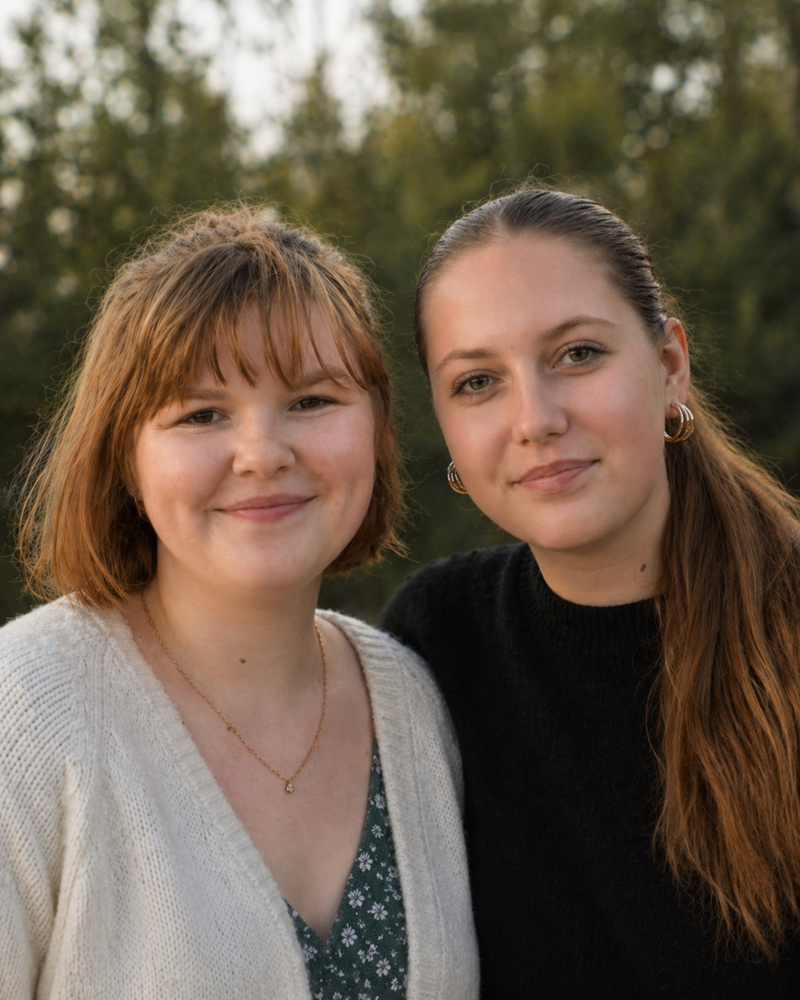

Weekly Meetings
An Educate → Discuss → Create cycle every week. Members rotate who leads, so everyone teaches at least once per quarter.
We're a student club fighting the research gaps, diagnostic delays, and stigma that define women's healthcare. We meet weekly. We make noise.

Daria Gavrushin & Lisa Borowik · Co-Presidents
Conditions affecting millions of patients receive a fraction of the research dollars given to comparable conditions in men.
Pain reports are downgraded, anxiety diagnoses substitute for physical ones, and patients wait years for answers.
The taboos around reproductive and menstrual health keep families, classrooms, and clinics from talking openly.
An Educate → Discuss → Create cycle every week. Members rotate who leads, so everyone teaches at least once per quarter.
A printed take-home each quarter on a focused topic. Distributed to classrooms, clinics, and parent networks.
OB-GYNs, researchers, and patient advocates join our meetings. Sessions are recorded and posted to Resources.
We work with school administration and local nonprofits to translate findings into policy proposals and curriculum updates.